designed by Алёна Шинкарева
Мобильная версия сакта ВК - m.vk.ru/itmoru
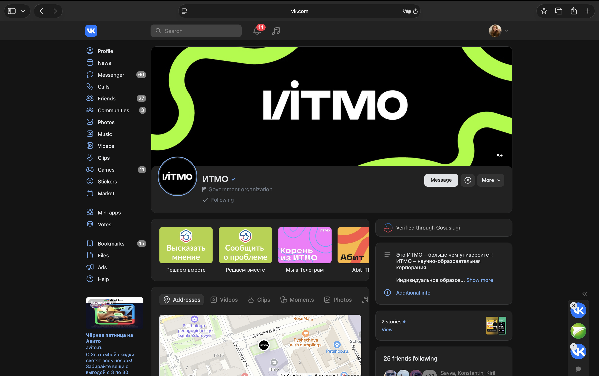
Десктопная версия сакта ВК - vk.ru/itmoru
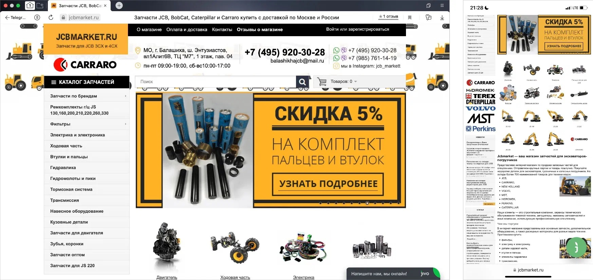
Так выглядит неадаптивный сайт: его отображение одинаково и на компьютере, и на телефоне.
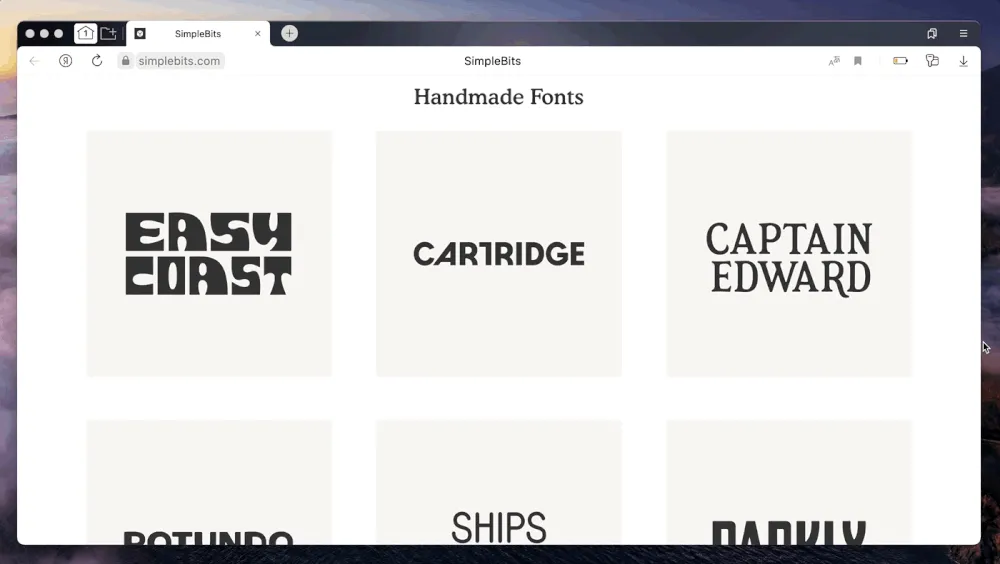
Так выглядит «резиновый» сайт: ширина карточек меняется по мере сужения экрана, но порядок их расположения сохраняется.
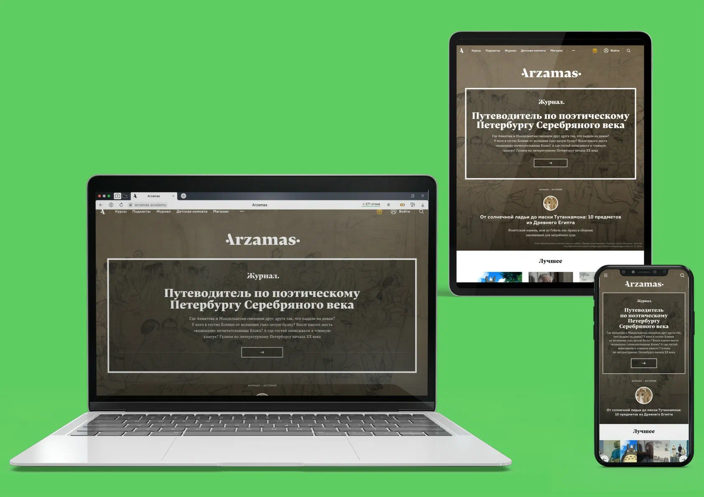
Так выглядит адаптивный сайт портала «Арзамас» — есть версия для компьютера, планшета и телефона. Всё это — три разных макета.
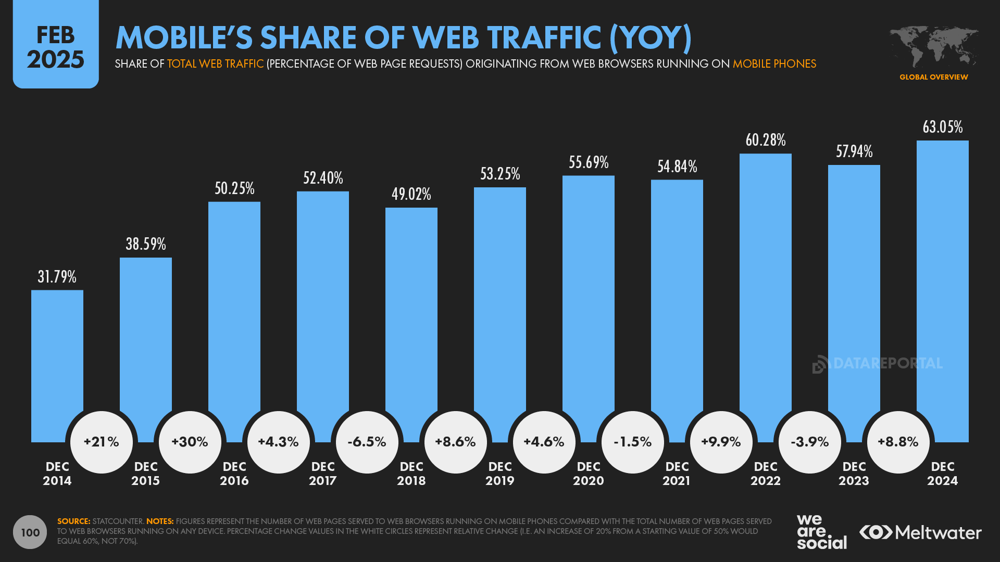
Доля мобильного интернета в веб-трафике.
В адаптивной вёрстке выделяют несколько ключевых принципов, которые помогают сделать сайт удобным на всех устройствах.
Доля мобильного интернета в веб-трафике.
/* стили для мобильной версии */
.burger-icon {
cursor: pointer;
}
.navbar__links_list {
display: flex;
flex-direction: column;
gap: 25px;
}
/* стили для планшетной и десктопной версий */
@media (width >= 640px) {
.burger-icon {
display: none;
}
.navbar__links_list {
flex-direction: row;
margin: 0;
}
}
/* дополнительные стили для десктопа */
@media (width >= 1024px) {}/* стили для десктопной версии */
.burger-icon {
display: none;
}
.navbar__links_list {
display: flex;
gap: 25px;
}
/* дополнительные стили для планшета */
@media (width < 1024px) {}
/* стили для мобильной версии */
@media (width < 640px) {
.burger-icon {
display: initial;
cursor: pointer;
}
.navbar__links_list {
flex-direction: column;
}
}Теперь разберём, как на практике кодируется адаптивный дизайн.
Медиазапросы позволяют менять стили под разные устройства и размеры экранов.
@medianot, and, orwidth, height)aspect-ratio)orientation: portrait / landscape)resolution).box {
width: 100%;
max-width: 900px;
margin: 0 auto;
padding: 50px 10px;
background: red;
color: white;
border-radius: 12px;
border: 4px dashed white;
}
@media (min-width: 400px) {
.box {
background: orange;
}
}
@media (min-width: 800px) {
.box {
background: green;
}
}
body {
margin: 30px;
background: black;
}
.box {
width: 80vw;
aspect-ratio: 16 / 9;
background: pink;
border-radius: 20px;
border: 4px solid white;
}
.layout {
display: flex;
gap: 10px;
justify-content: center;
align-items: center;
}
@media (orientation: portrait) {
.layout { flex-direction: column; }
}
@media (orientation: landscape) {
.layout { flex-direction: row; }
}
Можно подбирать стили и изображения в зависимости от плотности пикселей (DPI / dppx).
/* Retina / высокое разрешение */
@media (min-resolution: 2dppx) {
.logo {
background-image: url('hong@2x.png');
}
}
/* Обычное разрешение */
@media (max-resolution: 1.99dppx) {
.logo {
background-image: url('hong.png');
}
}
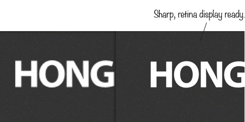
.container {
padding: 16px;
}
@media (min-width: 768px) {
.container {
max-width: 720px;
margin: 0 auto;
}
}width и height — px, em, rem, %, vh, vwresolution — dpi, dpcm, dppxaspect-ratio позволяет задавать соотношение сторон блока@media (min-width: 480px) and (max-width: 1024px).container {
padding: 16px;
}
@media (min-width: 768px) {
.container {
max-width: 720px;
margin: 0 auto;
}
}
Без корректного viewport
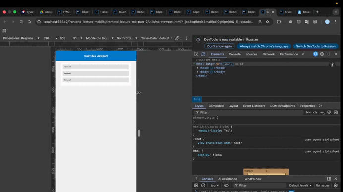
С корректным viewport
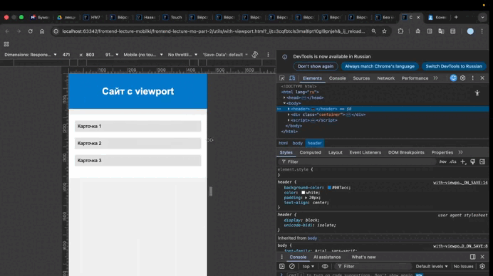
.container {
display: flex;
flex-wrap: wrap;
gap: 20px;
}
.item {
flex: 1 1 200px;
padding: 20px;
text-align: center;
color: white;
}
.grid {
display: grid;
grid-template-columns: repeat(auto-fill, minmax(150px, 1fr));
gap: 20px;
}
.grid div {
padding: 20px;
color: white;
text-align: center;
}
void main() {
// Объявление переменных
String name = "Alex";
int age = 20;
double score = 4.7;
// Условие
if (age >= 18) {
print("$name взрослый");
} else {
print("$name несовершеннолетний");
}
// Цикл
for (int n in numbers) {
print("Число: $n");
}
// Функция
String greet(String person) {
return "Привет, $person!";
}
print(greet(name));
}
Widget build(BuildContext context) {
return Column(
children: [
Text('Привет!'),
Icon(Icons.star),
SizedBox(height: 20),
ElevatedButton(onPressed: () {}, child: Text('Кнопка'))
],
);
}
Не меняется во время работы приложения.
Привет!
class Hello extends StatelessWidget {
@override
Widget build(BuildContext context) {
return Text('Привет!');
}
}
Виджет с изменяемым состоянием.
Счётчик: 0
class Counter extends StatefulWidget {
@override
_CounterState createState() => _CounterState();
}
class _CounterState extends State< Counter> {
int count = 0;
@override
Widget build(BuildContext context) {
return Column(
children: [
Text('Счётчик: $count'),
ElevatedButton(
onPressed: () => setState(() => count++),
child: Text('Добавить'),
)
],
);
}
}
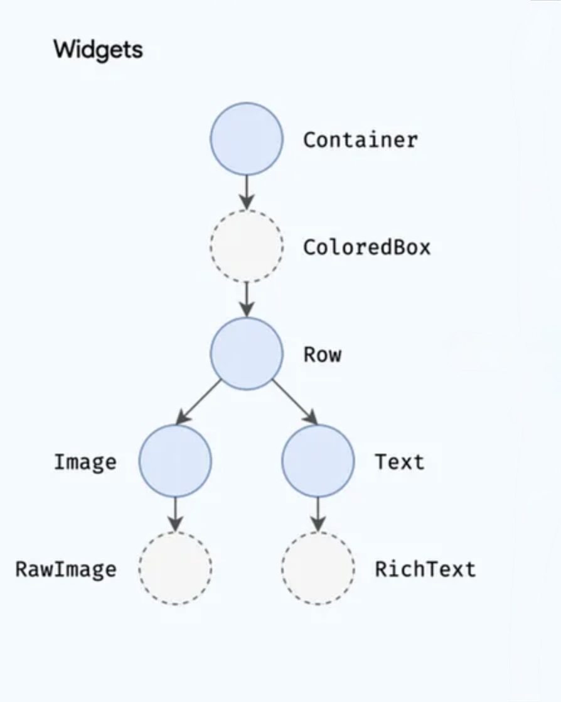
Создаёт Widget Tree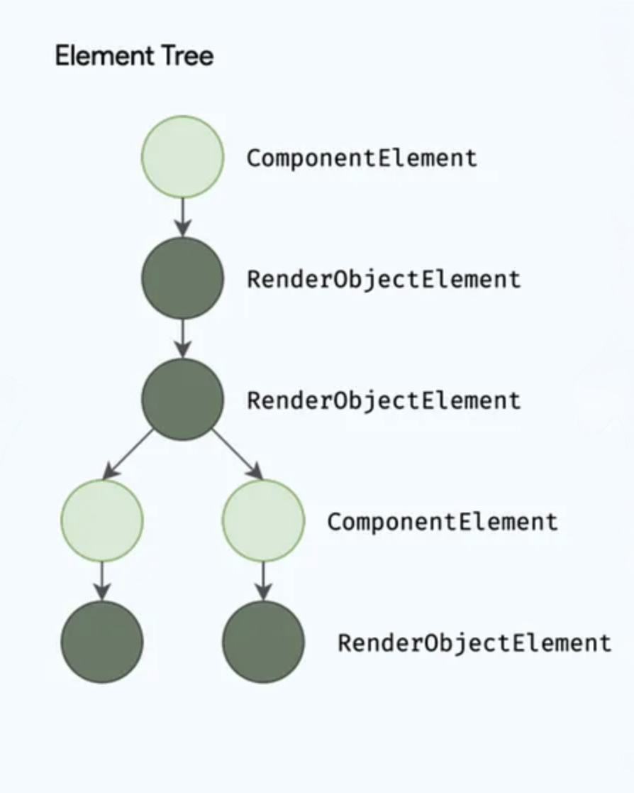
Преобразует в Element Tree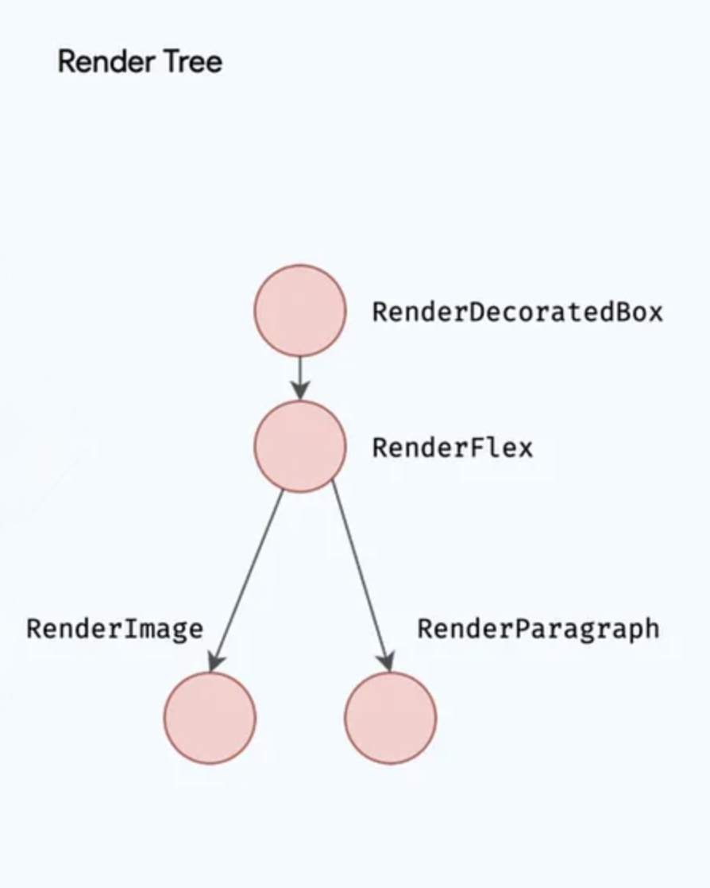
Преобразует в Render Tree